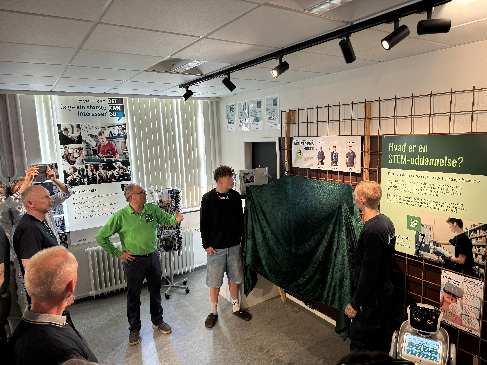

Et fysisk oplevelsesbord med NFC-sensorer og 3D-printede brikker, der guider unge igennem erhvervsuddannelsernes grønne omstilling.
Udfordringen
Vi havde brug for at udvikle et æstetisk tiltalende, men funktionelt system til at fortælle historien på en engagerende måde – ved hjælp af videoer, NFC-displaysystemer og specialfremstillede, professionelt printede og nymalede 3D-modeller af de tre virksomhedsrepræsentanter, Oliver, Mads og Rasmus.
Når de er placeret på den integrerede chip, afspilles deres respektive video på skærmen og fortæller hver persons historie.

Indviklet 3D-arbejde – lavet i hånden, lavet til at holde
Vores tilgang
Vi begyndte at udføre grundige tekniske analyser og test af forskellige materialer, vurdere videoafspilningsmuligheder og udforske løsninger til at låse NFC-tags for at forhindre forsinkelse.
Mest af alt var vores stolthed og glæde vores 3D-modeller. Efter individuelle scanninger og rettelser blandede vores specialist farver for at matche karakterens tøj, øjne, hud; selv de små logoer trykt på deres skjorter blev matchet til perfektion og malet i hånden.
Til sidst blev modellerne lakeret for et stærkere hold – disse figurer er jo lavet til at blive flyttet, undersøgt og leget med!
Løsningen
Vores
Konklusion
Vores samarbejde med ErhvervsTanken og vores projektpartnere resulterede i et robust, interaktivt NFC-displaysystem, der opfyldte alle tekniske og æstetiske krav.
Installationen giver besøgende mulighed for problemfrit at engagere sig i pædagogisk indhold og fremhæver lærlinges rejser inden for stål- og værktøjsfremstilling, så meget, at kundens sponsor, Stålakademiet, også bad om et sæt figurer til sig selv – vi nåede i alt 22 forskellige håndmalede figurer.
Vi tror på, at flere projekter som dette vil kaste lys over nye, banebrydende måder at engagere folk i samtalen om grønne omstillinger.
Vi er stolte af at have været en del af det og holder vores 3D-printer og malerpensler klar til lignende projekter.